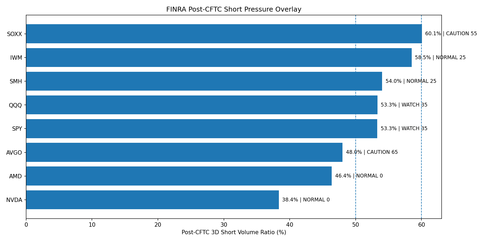

US Downside Positioning Monitor
Overall Status: ALERT / 95/100
ES / S&P 500: ALERT 95/100 - Fresh short buildNQ / NASDAQ 100: ALERT 75/100 - Fresh short build
RTY / RUSSELL 2000: CAUTION 65/100 - Long liquidation / risk-off
Summary Table
| Asset | Status | Score | Lev Net | WoW Net | WoW Long | WoW Short | OI Chg | Short Ratio | Setup |
|---|---|---|---|---|---|---|---|---|---|
| ES / S&P 500 | ALERT | 95 | -500,732 | -42,952 | 10,351 | 53,303 | 55,610 | 80.5% | Fresh short build |
| NQ / NASDAQ 100 | ALERT | 75 | -53,650 | -1,971 | 4,295 | 6,266 | 11,982 | 66.0% | Fresh short build |
| RTY / RUSSELL 2000 | CAUTION | 65 | -73,340 | -5,128 | -7,919 | -2,791 | -10,959 | 70.2% | Long liquidation / risk-off |
ES / S&P 500


NQ / NASDAQ 100


RTY / RUSSELL 2000


FINRA Post-CFTC Short Pressure Overlay
Bridge Status: CONFIRMED / 83.0/100
CFTC Score: ALERT 95/100FINRA Max Score: 65/100
Elevated Symbols: AVGO, SOXX
Alert Symbols: None
CFTC에서 확인된 하방 포지셔닝 이후, FINRA 기준 일간 short pressure도 높게 나타나 CFTC 기준일 이후에도 하방/헤지 압력이 지속된 것으로 해석됩니다.
Post-CFTC 3D Short Pressure
| Symbol | Status | Score | 3D Short Ratio | 20D Avg | Spread | Z-score | Spike | Dates | Comment |
|---|---|---|---|---|---|---|---|---|---|
| AVGO | CAUTION | 65 | 48.02% | 34.96% | 13.06%p | 1.62 | 2.62x | 2026-06-03, 2026-06-04, 2026-06-05 | 3D short ratio가 20D 평균보다 10%p 이상 높음, 최신 z-score 1.5 이상, short volume 20D 평균 대비 2배 이상 |
| SOXX | CAUTION | 55 | 60.06% | 62.45% | -2.39%p | -0.3 | 2.02x | 2026-06-03, 2026-06-04, 2026-06-05 | 3D short ratio 60% 이상, short volume 20D 평균 대비 2배 이상 |
| QQQ | WATCH | 35 | 53.32% | 58.89% | -5.57%p | -0.54 | 2.35x | 2026-06-03, 2026-06-04, 2026-06-05 | 3D short ratio 50% 이상, short volume 20D 평균 대비 2배 이상 |
| SPY | WATCH | 35 | 53.29% | 50.83% | 2.45%p | 0.1 | 1.82x | 2026-06-03, 2026-06-04, 2026-06-05 | 3D short ratio 50% 이상, 3D short ratio가 20D 평균보다 높음, short volume 20D 평균 대비 1.5배 이상 |
| IWM | NORMAL | 25 | 58.5% | 63.91% | -5.4%p | -0.18 | 1.28x | 2026-06-03, 2026-06-04, 2026-06-05 | 3D short ratio 55% 이상 |
| SMH | NORMAL | 25 | 54.03% | 55.12% | -1.09%p | -0.16 | 1.98x | 2026-06-03, 2026-06-04, 2026-06-05 | 3D short ratio 50% 이상, short volume 20D 평균 대비 1.5배 이상 |
| AMD | NORMAL | 0 | 46.38% | 49.3% | -2.93%p | -0.74 | 1.15x | 2026-06-03, 2026-06-04, 2026-06-05 | 특이 신호 약함 |
| NVDA | NORMAL | 0 | 38.36% | 37.95% | 0.42%p | -0.88 | 1.03x | 2026-06-03, 2026-06-04, 2026-06-05 | 특이 신호 약함 |

FINRA Daily Short Volume은 실제 미상환 숏 잔고가 아니라,
해당 거래일의 short sale 보고 거래량 비중입니다.
따라서 이 섹션은 CFTC 기준일 이후 숏 압력의 지속 여부를 보는 보조 지표로 사용합니다.
Note: CFTC TFF data is weekly and backward-looking. This report is intended for positioning monitoring, not as a standalone trading signal.